PSAT-자료해석 (2019-03-09 기출문제)
1. 다음 <표>는 2016년 경기도 10개 시의 문화유산 보유건수 현황에 대한 자료이다. 이에 대한 설명으로 옳은 것은?
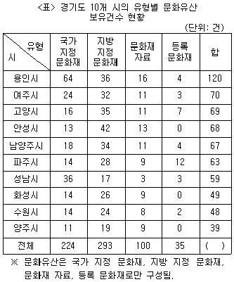
- '등록 문화재'를 보유한 시는 6개이다.
- 유형별 전체 보유건수가 가장 많은 문화유산은 '국가 지정 문화재'이다.
- 파주시 문화유산 보유건수 합은 전체 문화유산 보유건수 합의 10% 이하이다.
- '문화재 자료' 보유건수가 가장 많은 시는 안성시다.
- '국가 지정 문화재'의 시별 보유건수 순위는 '문화재 자료'와 동일하다.
(정답률: 알수없음)

2. 다음 <표>는 2018년 '갑'국 도시 A~F의 폭염주의보 발령일수, 온열질환자 수, 무더위 쉼터 수 및 인구수에 관한 자료이다. 이에 대한 ＜보기＞의 설명 중 옳은 것만을 모두 고르면?
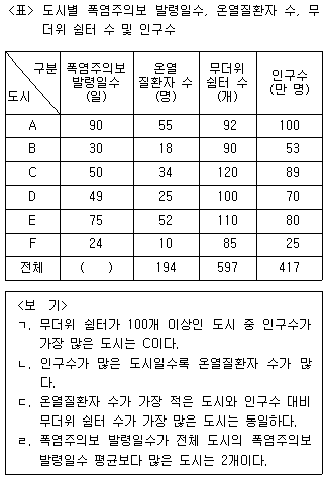
- ㄱ, ㄴ
- ㄱ, ㄷ
- ㄴ, ㄹ
- ㄱ, ㄷ, ㄹ
- ㄴ, ㄷ, ㄹ
(정답률: 알수없음)
3. 다음 <그림>과 <표>는 '갑'국의 재생에너지 생산 현황에 관한 자료이다. 이에 대한 ＜보기＞의 설명 중 옳은 것만을 모두 고르면?
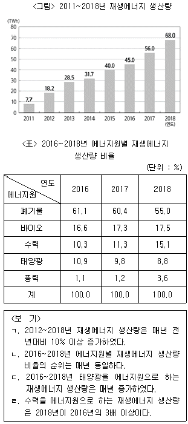
- ㄱ, ㄴ
- ㄱ, ㄷ
- ㄱ, ㄹ
- ㄴ, ㄷ
- ㄴ, ㄹ
(정답률: 알수없음)
4. 다음 <표>는 2013~2018년 커피전문점 A~F 브랜드의 매출액과 점포수에 관한 자료이다. 이를 이용하여 작성한 그래프로 옳지 않은 것은?
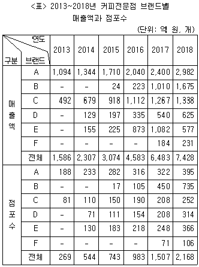
- 전체 커피전문점의 전년대비 매출액과 점포수 증가폭 추이
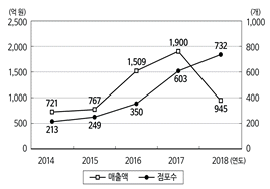
- 2018년 커피전문점 브랜드별 점포당 매출액
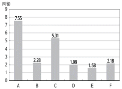
- 2017년 매출액 기준 커피전문점 브랜드별 점유율
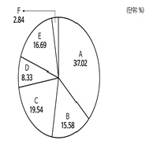
- 2017년 대비 2018년 커피전문점 브랜드별 매출액의 증가량
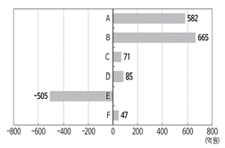
- 전체 커피전문점의 연도별 점포당 매출액
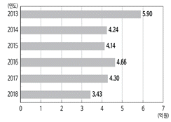
(정답률: 알수없음)
5. 다음 <표>는 A, B 기업의 경력사원채용 지원자 특성에 관한 자료이다. 이에 대한 ＜보기＞의 설명 중 옳은 것만을 모두 고르면?
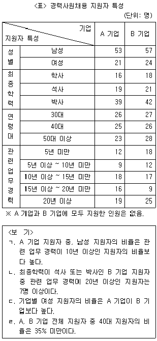
- ㄱ, ㄴ
- ㄱ, ㄷ
- ㄴ, ㄷ
- ㄴ, ㄹ
- ㄷ, ㄹ
(정답률: 알수없음)
6. 다음 <표>는 가정용 정화조에서 수집한 샘플의 수중 질소 성분 농도를 측정한 자료이다. 이에 대한 ＜보기＞의 설명 중 옳은 것만을 모두 고르면?
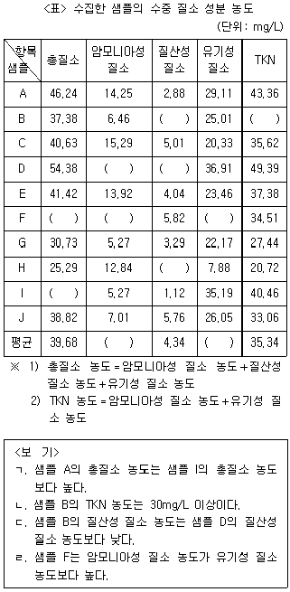
- ㄱ, ㄴ
- ㄱ, ㄷ
- ㄴ, ㄷ
- ㄱ, ㄷ, ㄹ
- ㄴ, ㄷ, ㄹ
(정답률: 알수없음)
7. 다음 <표>는 '갑'국 A∼J 지역의 대형종합소매업 현황에 대한 자료이다. 이에 대한 ＜보기＞의 설명 중 옳은 것만을 모두 고르면?
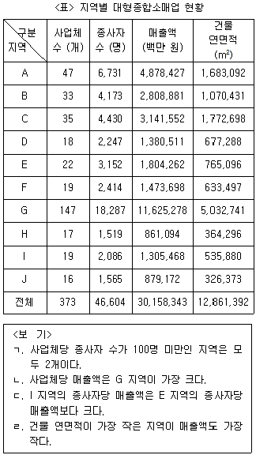
- ㄱ, ㄷ
- ㄱ, ㄹ
- ㄴ, ㄷ
- ㄴ, ㄹ
- ㄱ, ㄴ, ㄷ
(정답률: 알수없음)
8. 다음 <표>는 1996~2015년 생명공학기술의 기술분야별 특허건수와 점유율에 관한 자료이다. <표>와 <조건>에 근거하여 A~D에 해당하는 기술분야를 바르게 나열한 것은?(순서대로 A, B, C, D)
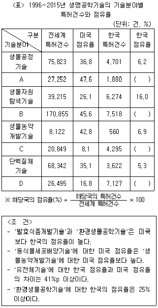
- 동식물세포배양기술, 유전체기술, 발효식품개발기술, 환경생물공학기술
- 동식물세포배양기술, 유전체기술, 환경생물공학기술, 발효식품개발기술
- 발효식품개발기술, 유전체기술, 동식물세포배양기술, 환경생물공학기술
- 유전체기술, 동식물세포배양기술, 발효식품개발기술, 환경생물공학기술
- 유전체기술, 동식물세포배양기술, 환경생물공학기술, 발효식품개발기술
(정답률: 알수없음)
9. 다음 <표>와 <그림>은 2017년 지역별 정보탐색에 관한 자료이다. 이에 대한 설명으로 옳은 것은?
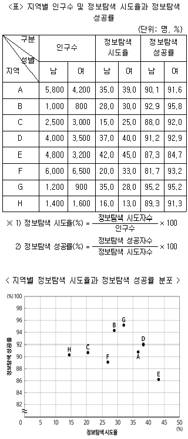
- 인구수 대비 정보탐색 성공자수의 비율은 B 지역이 D 지역보다 높다.
- 인구수 대비 정보탐색 성공자수의 비율이 가장 낮은 지역은 H 지역이다.
- 정보탐색 시도율이 높은 지역일수록 정보탐색 성공률도 높다.
- 인구수가 가장 작은 지역과 남성 정보탐색 성공자수가 가장 작은 지역은 동일하다.
- D 지역의 여성 정보탐색 성공자수는 C 지역의 여성 정보탐색 성공자수의 2배 이상이다.
(정답률: 알수없음)
10. 다음 <표>는 '갑'국 축구 국가대표팀 코치(A~F)의 분야별 잠재능력을 수치화한 것이다. 각 코치가 맡은 모든 분야를 체크(√)로 표시할 때, <표>와 <조건>에 부합하는 코치의 역할 배분으로 가능한 것은?
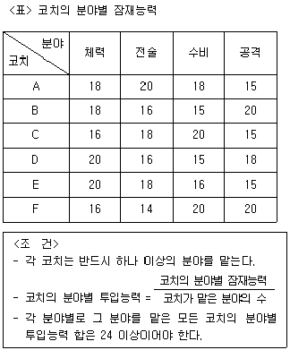
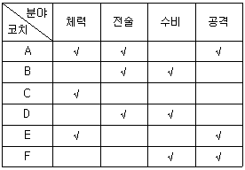
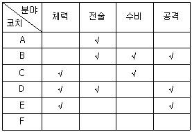
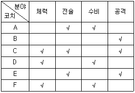
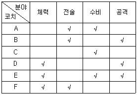
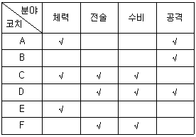
(정답률: 알수없음)
11. 다음 <표>는 2014~2018년 '갑'국의 범죄 피의자 처리 현황에 대한 자료이다. 이에 대한 설명으로 옳은 것은?
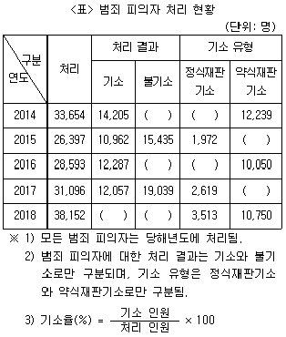
- 2015년 이후 처리 인원이 전년대비 증가한 연도에는 기소 인원도 전년대비 증가한다.
- 2018년 기소 인원과 기소율은 2014년보다 모두 증가하였다.
- 2017년 불기소 인원은 2018년보다 많다.
- 2014년 불기소 인원은 정식재판기소 인원의 10배 이상이다.
- 처리 인원 중 정식재판기소 인원과 약식재판기소 인원의 합이 차지하는 비율은 매년 50% 미만이다.
(정답률: 알수없음)
12. 다음 <그림>과 <표>는 연도별 의약품 국내시장 현황과 세계 지역별 의약품 시장규모에 관한 자료이다. 이에 대한 ＜보기＞의 설명 중 옳은 것만을 모두 고르면?
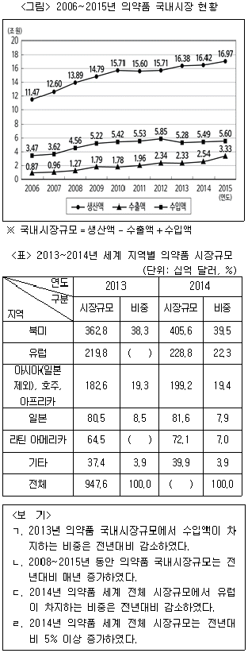
- ㄱ, ㄴ
- ㄱ, ㄹ
- ㄱ, ㄴ, ㄷ
- ㄱ, ㄷ, ㄹ
- ㄴ, ㄷ, ㄹ
(정답률: 알수없음)
13. 다음 <표>는 2014~2018년 '갑'국의 예산 및 세수 실적과 2018년 세수항목별 세수 실적에 관한 자료이다. 이에 대한 설명으로 옳지 않은 것은?
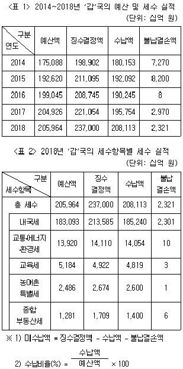
- 미수납액이 가장 큰 연도는 2018년이다.
- 수납비율이 가장 높은 연도는 2014년이다.
- 2018년 내국세 미수납액은 총 세수 미수납액의 95% 이상을 차지한다.
- 2018년 세수항목 중 수납비율이 가장 높은 항목은 종합부동산세이다.
- 2018년 교통ㆍ에너지ㆍ환경세 미수납액은 교육세 미수납액보다 크다.
(정답률: 알수없음)
14. 다음 <그림>과 <표>는 '갑'국 맥주 소비량 및 매출액 현황에 관한 자료이다. 이에 대한 <보고서>의 설명 중 옳지 않은 것은?
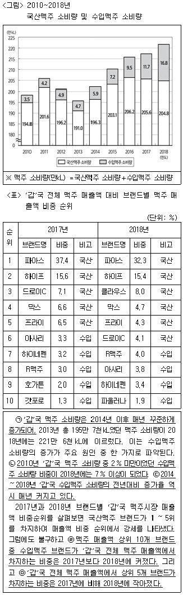
- ㄱ
- ㄴ
- ㄷ
- ㄹ
- ㅁ
(정답률: 알수없음)
15. 다음 <표>는 우리나라 근로장려금과 자녀장려금 신청 현황에 관한 자료이다. 이에 대한 설명으로 옳지 않은 것은?
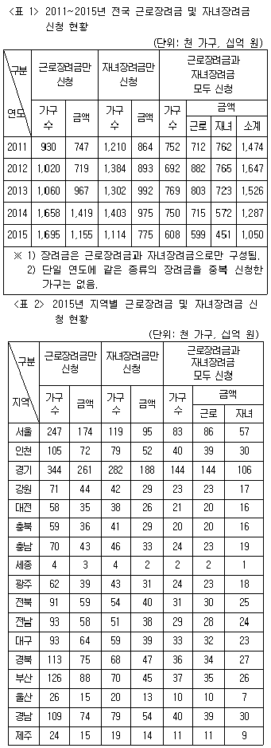
- 장려금을 신청한 가구의 수는 2011~2014년 동안 매년 증가하였다.
- 근로장려금과 자녀장려금을 모두 신청한 가구의 가구당 장려금 총 신청 금액이 가장 큰 연도는 2012년이다.
- 2015년 자녀장려금만 신청한 가구 중 경기 지역 가구가 차지하는 비중은 20% 이상이다.
- 2015년 각 지역에서, 근로장려금과 자녀장려금을 모두 신청한 가구의 가구당 근로장려금 신청 금액은 근로장려금만 신청한 가구의 가구당 근로장려금 신청 금액보다 크다.
- 2015년 근로장려금을 신청한 가구의 가구당 근로장려금 신청금액은 부산이 전국보다 크다.
(정답률: 알수없음)
16. 다음 <표>와 <그림>은 우리나라의 에너지 유형별 1차에너지 생산과 최종에너지 소비에 관한 자료이다. 이에 대한 ＜보기＞의 설명으로 옳지 않은 것은?
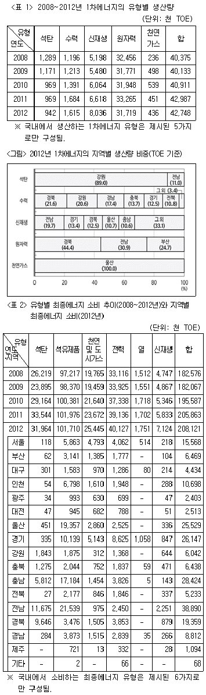
- 2008년 대비 2012년의 생산량 증가율이 가장 큰 1차에너지 유형은 천연가스이다.
- 2012년 1차에너지를 가장 많이 생산한 지역에서는 같은 해 최종에너지 중 석유제품을 가장 많이 소비하였다.
- 2012년 석탄 1차에너지 생산량은 2012년 경기 지역의 신재생 1차에너지 생산량보다 적다.
- 2012년에 1차에너지 생산량이 최종에너지 소비량의 합보다 많은 지역이 존재한다.
- 2008년 대비 2012년의 소비량 증가율이 가장 큰 최종에너지 유형은 신재생이다.
(정답률: 알수없음)
17. 다음 <표>는 '갑'국의 전기자동차 충전요금 산정기준과 계절별 부하 시간대에 대한 자료이다. 이에 대한 설명으로 옳은 것은?
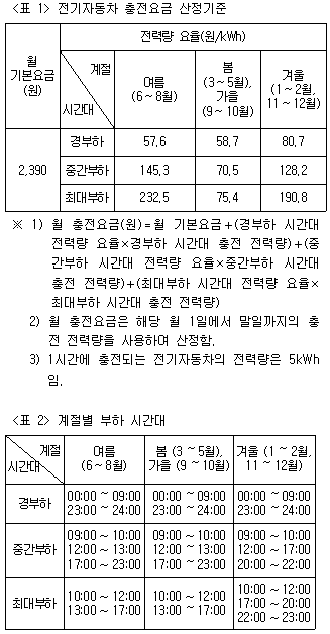
- 모든 시간대에서 봄, 가을의 전력량 요율이 가장 낮다.
- 월 100kWh를 충전했을 때 월 충전요금의 최댓값과 최솟값 차이는 16,000원 이하이다.
- 중간부하 시간대의 총 시간은 6월 1일과 12월 1일이 동일하다.
- 22시 30분의 전력량 요율이 가장 높은 계절은 여름이다.
- 12월 중간부하 시간대에만 100kWh를 충전한 월 충전요금은 6월 경부하 시간대에만 100kWh를 충전한 월 충전요금의 2배 이상이다.
(정답률: 알수없음)
18. 다음 <표>는 2010~2016년 '갑'국의 신설법인 현황에 대한 자료이다. <표>를 이용하여 작성한 그래프로 옳지 않은 것은?
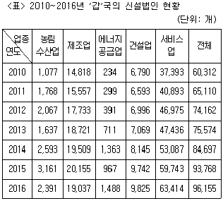
- 2016년 신설법인의 업종별 구성비
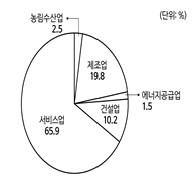
- 2011~2016년 제조업 및 서비스업 신설법인 수 추이
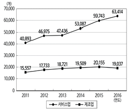
- 2011~2016년 건설업 신설법인 수의 전년대비 증가율 추이
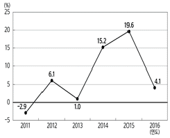
- 2011~2016년 신설법인 중 서비스업 신설법인 비율
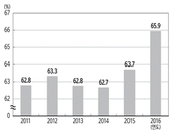
- 2011~2016년 전체 신설법인 수의 전년대비 증가율 추이
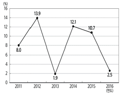
(정답률: 알수없음)
19. 위 <표>를 근거로 한 ＜보기＞의 설명 중 옳은 것만을 모두 고르면?(19번 공통지문 문제)
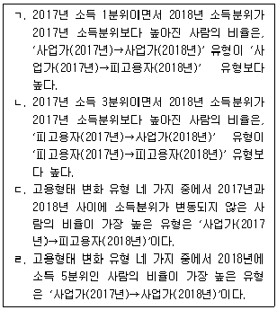
- ㄱ, ㄷ
- ㄴ, ㄹ
- ㄷ, ㄹ
- ㄱ, ㄴ, ㄷ
- ㄱ, ㄴ, ㄹ
(정답률: 알수없음)
20. 다음 <표>와 <보고서>는 A시 대기오염과 그 영향에 관한 자료이다. 제시된 <표> 이외에 <보고서>를 작성하기 위해 추가로 필요한 자료만을 ＜보기＞에서 모두 고르면?
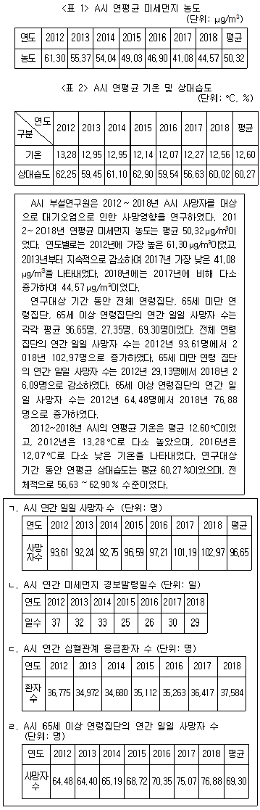
- ㄱ, ㄴ
- ㄱ, ㄷ
- ㄱ, ㄹ
- ㄴ, ㄷ
- ㄷ, ㄹ
(정답률: 알수없음)
21. 다음 <그림>은 2015~2018년 사용자별 사물인터넷 관련 지출액에 관한 자료이다. 이에 대한 설명으로 옳지 않은 것은?
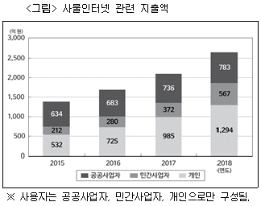
- 2016~2018년 동안 '공공사업자' 지출액의 전년대비 증가폭이 가장 큰 해는 2017년이다.
- 2018년 사용자별 지출액의 전년대비 증가율은 '개인'이 가장 높다.
- 2016~2018년 동안 사용자별 지출액의 전년대비 증가율은 매년 '공공사업자'가 가장 낮다.
- '공공사업자'와 '민간사업자'의 지출액 합은 매년 '개인'의 지출액보다 크다.
- 2018년 모든 사용자의 지출액 합은 2015년 대비 80% 이상 증가하였다.
(정답률: 알수없음)
22. 다음 <보고서>는 2017년과 2018년 청소년활동 참여 실태에 관한 자료이다. <보고서>의 내용과 부합하는 자료만을 ＜보기＞에서 모두 고르면?
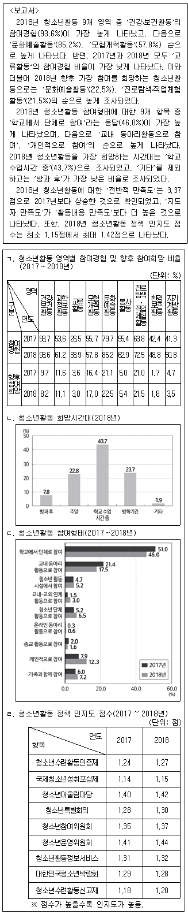
- ㄴ, ㄷ
- ㄴ, ㄹ
- ㄷ, ㄹ
- ㄱ, ㄴ, ㄷ
- ㄱ, ㄷ, ㄹ
(정답률: 알수없음)
23. 다음 <표>는 2015~2018년 A~D국 초흡수성 수지의 기술분야별 특허출원에 대한 자료이다. <표>를 이용하여 작성한 그래프로 옳지 않은 것은?
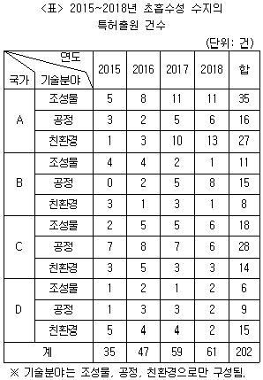
- 2015~2018년 국가별 초흡수성 수지의 특허출원 건수 비율
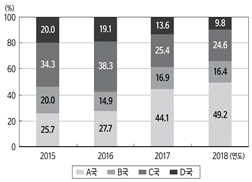
- 공정 기술분야의 국가별, 연도별 초흡수성 수지의 특허출원 건수
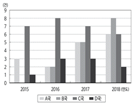
- A~D국 전체의 초흡수성 수지 특허출원 건수의 연도별 구성비
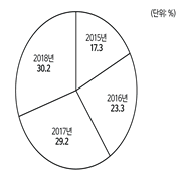
- 2015~2018년 기술분야별 초흡수성 수지 특허출원 건수 합의 국가별 비중
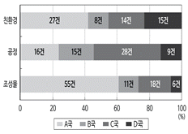
- A~D국 전체의 초흡수성 수지 특허출원 건수의 전년대비 증가율
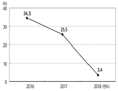
(정답률: 알수없음)
24. 다음 <표>는 수면제 A~D를 사용한 불면증 환자 '갑'~'무'의 숙면시간을 측정한 결과이다. 이에 대한 ＜보기＞의 설명 중 옳은 것만을 모두 고르면?
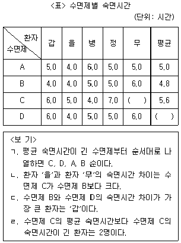
- ㄱ, ㄴ
- ㄱ, ㄷ
- ㄴ, ㄹ
- ㄱ, ㄴ, ㄷ
- ㄴ, ㄷ, ㄹ
(정답률: 알수없음)
25. 다음 <표>는 2018년 A~C 지역의 0~11세 인구 자료이다. 이에 대한 ＜보기＞의 설명 중 옳은 것만을 모두 고르면?
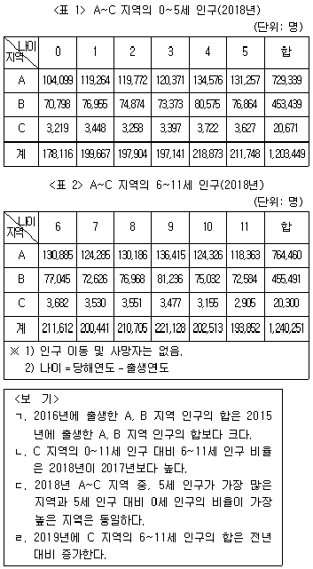
- ㄱ, ㄴ
- ㄱ, ㄷ
- ㄱ, ㄹ
- ㄴ, ㄷ
- ㄴ, ㄹ
(정답률: 알수없음)
26. 다음 <표>는 한국전쟁 당시 참전한 유엔군의 참전현황 및 피해인원에 관한 자료이다. 이에 대한 설명으로 옳은 것은?
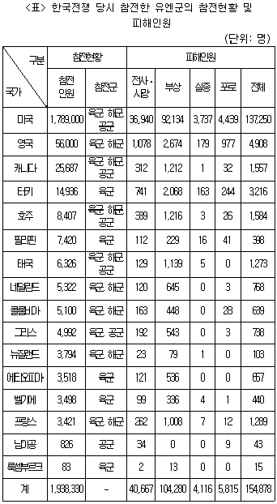
- 미국의 참전인원은 다른 모든 국가의 참전인원의 합보다 15배 이상 많다.
- 참전인원 대비 전체 피해인원 비율이 가장 큰 국가는 터키이다.
- 공군이 참전한 국가 중 해당 국가의 전체 피해인원 대비 '부상' 인원의 비율이 가장 큰 국가는 태국이다.
- '전사ㆍ사망' 인원은 육군만 참전한 모든 국가의 합이 공군만 참전한 모든 국가의 합의 30배 이하이다.
- '실종' 인원이 '포로' 인원보다 많은 국가는 4개국이다.
(정답률: 알수없음)
27. 다음 <표>는 '갑'국의 가사노동 부담형태에 대한 설문조사 결과이다. 이에 대한 <보고서>의 내용 중 옳은 것만을 모두 고르면?
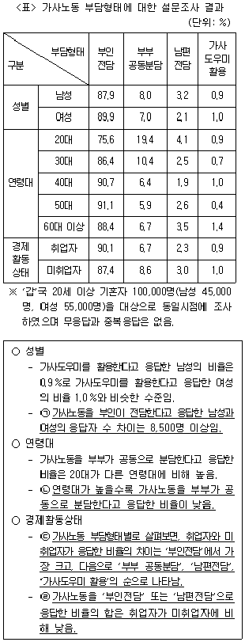
- ㄱ, ㄴ
- ㄱ, ㄷ
- ㄱ, ㄹ
- ㄴ, ㄷ
- ㄷ, ㄹ
(정답률: 알수없음)
28. 다음 <표>는 2014년 우리나라의 전자상거래물품 수입통관 현황에 대한 자료이다. 이에 대한 <보고서>의 설명 중 옳지 않은 것은?
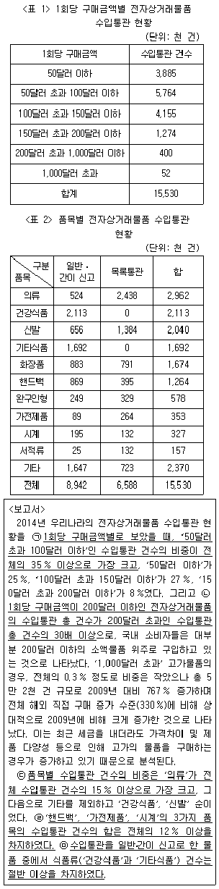
- ㄱ
- ㄴ
- ㄷ
- ㄹ
- ㅁ
(정답률: 알수없음)
29. 다음 <표>와 <그림>은 '갑'요리대회 참가자의 종합점수 및 항목별 득점기여도 산정 방법과 항목별 득점 결과이다. 이에 대한 ＜보기＞의 설명 중 옳은 것만을 모두 고르면?
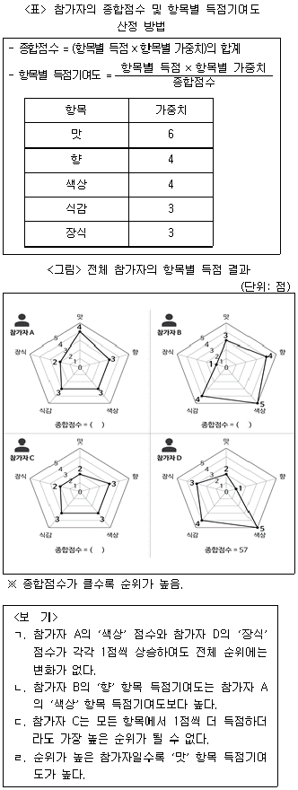
- ㄱ, ㄴ
- ㄱ, ㄷ
- ㄱ, ㄹ
- ㄴ, ㄷ
- ㄴ, ㄹ
(정답률: 알수없음)
30. 다음 <표>는 2018년 5~6월 A군의 휴대폰 모바일 앱별 데이터 사용량에 관한 자료이다. 이에 대한 설명으로 옳은 것은?
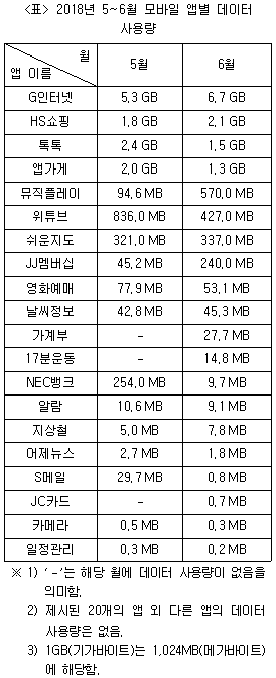
- 5월과 6월에 모두 데이터 사용량이 있는 앱 중 5월 대비 6월 데이터 사용량의 증가량이 가장 큰 앱은 '뮤직플레이'이다.
- 5월과 6월에 모두 데이터 사용량이 있는 앱 중 5월 대비 6월 데이터 사용량이 감소한 앱은 9개이고 증가한 앱은 8개이다.
- 6월에만 데이터 사용량이 있는 모든 앱의 총 데이터 사용량은 '날씨정보'의 6월 데이터 사용량보다 많다.
- 'G인터넷'과 'HS쇼핑'의 5월 데이터 사용량의 합은 나머지 앱의 5월 데이터 사용량의 합보다 많다.
- 5월과 6월에 모두 데이터 사용량이 있는 앱 중 5월 대비 6월 데이터 사용량 변화율이 가장 큰 앱은 'S메일'이다.
(정답률: 알수없음)
31. 다음 <표>는 2016~2018년 '갑'국 매체 A~D의 종사자 현황 자료이다. 이와 <조건>을 근거로 2018년 전체 종사자가 많은 것부터 순서대로 나열하면?
- 종이신문－방송－인터넷신문－통신
- 종이신문－인터넷신문－방송－통신
- 통신－종이신문－인터넷신문－방송
- 통신－인터넷신문－종이신문－방송
- 인터넷신문－방송－종이신문－통신
(정답률: 알수없음)
32. 다음 <표>는 성별, 연령대별 전자금융서비스 인증수단 선호도에 관한 자료이다. 이에 대한 설명으로 옳지 않은 것은?
- 연령대별 인증수단 선호도를 살펴보면, 30대와 40대 모두 아이핀이 3번째로 높다.
- 전체 응답자 중 선호 인증수단을 3개 선택한 응답자 수는 40% 이상이다.
- 선호하는 인증수단으로, 신용카드를 선택한 남성 수는 바이오인증을 선택한 남성 수의 3배 이하이다.
- 20대와 50대간의 인증수단별 선호도 차이는 공인인증서가 가장 크다.
- 선호하는 인증수단으로, 이메일을 선택한 20대 모두가 아이핀과 공인인증서를 동시에 선택했다면, 신용카드를 선택한 20대 모두가 아이핀을 동시에 선택한 것이 가능하다.
(정답률: 알수없음)
33. 다음 <표>는 3D기술 분야 특허등록건수 상위 10개국의 국가별 영향력지수와 기술력지수를 나타낸 자료이다. 이에 대한 ＜보기＞의 설명 중 옳은 것만을 모두 고르면?
- ㄱ, ㄴ
- ㄱ, ㄷ
- ㄴ, ㄹ
- ㄱ, ㄷ, ㄹ
- ㄴ, ㄷ, ㄹ
(정답률: 알수없음)
34. 다음 <표>는 2013~2017년 A~E국의 건강보험 진료비에 관한 자료이다. 이에 대한 ＜보기＞의 설명 중 옳은 것만을 모두 고르면?
- ㄱ, ㄴ
- ㄴ, ㄷ
- ㄷ, ㄹ
- ㄱ, ㄴ, ㄹ
- ㄴ, ㄷ, ㄹ
(정답률: 알수없음)
35. 다음 <보고서>와 <표>는 2015년 '갑'국의 수출입 현황에 대한 자료이다. 이에 대한 설명으로 옳지 않은 것은?
- 2015년 '갑'국의 수출액 상위 10개 국가 중 2015년 '갑'국과의 교역에서 무역수지 흑자를 기록한 국가는 4개국이다.
- 2014년 '갑'국의 대(對) '을'국 집적회로반도체 수출액은 수입액보다 크다.
- 2015년 '갑'국의 무역수지는 적자이다.
- 2015년 '갑'국의 전체 농수산물 수출액에서 '을'국에 대한 농수산물 수출액이 차지하는 비율은 2015년 '갑'국의 전체 농수산물 수입액에서 '을'국으로부터의 농수산물 수입액이 차지하는 비율보다 작다.
- 2015년 '갑'국의 전자제품 수출액은 수입액보다 크다.
(정답률: 알수없음)
36. 다음 <보고서>와 <표>는 '갑'국의 부동산 투기 억제 정책과 세대유형별 주택담보대출에 관한 자료이다. 이에 대한 ＜보기＞의 내용 중 옳은 것만을 모두 고르면?
- ㄱ
- ㄴ
- ㄱ, ㄷ
- ㄴ, ㄷ
- ㄱ, ㄴ, ㄷ
(정답률: 알수없음)
37. 다음 <표>는 2013년과 2016년에 A~D 국가 전체 인구를 대상으로 통신 가입자 현황을 조사한 자료이다. 이에 대한 설명으로 옳은 것은?
- A국의 2013년 인구 100명당 유선 통신 가입자가 40명이라면, 유선 통신 가입자는 2,200만 명이다.
- B국의 2013년 대비 2016년 무선 통신 가입자 수의 비율이 1.5라면, 2016년 무선 통신 가입자는 5,000만 명이다.
- C국의 2013년 인구 100명당 무선 통신 가입자가 77명이라면, 유ㆍ무선 통신 동시 가입자는 1,600만 명이다.
- D국의 2013년 대비 2016년 인구 비율이 1.5라면, 2016년 미가입자는 100만 명이다.
- 2013년 유선 통신만 가입한 인구는 B국이 D국의 3배 이상이다.
(정답률: 알수없음)
38. 위 <표>를 이용하여 작성한 그래프로 옳지 않은 것은?(39번 공통지문 문제)
- TV의 세계수출시장 규모 대비 A국 전체 수출액의 비율
- 2016년 A국의 전체 수출액에서 각 품목이 차지하는 비중
- A국 백색가전 세부 품목별 수출액 비중
- 2016~2018년 A국 품목별 세계수출시장 점유율
- 2017~2018년 A국 품목별 수출액의 전년대비 증가율
(정답률: 알수없음)